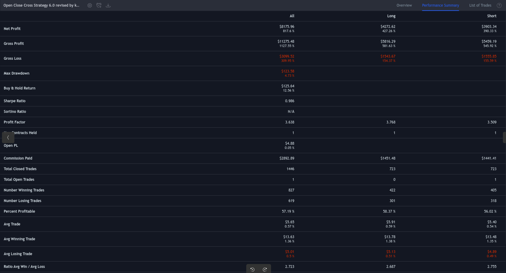

003 : Algorithmic Crypto Trading
This relatively simple yet powerful crossover TradingView strategy created with PineScript returns an 806% ROI on backtesting, including 0.1% in trading fees. This strategy had a 57.19% win/lose ratio with stable 0.986 Sharpe Ratio, while optimized to trade Ethereum on 30 minute candle chart. Backtesting using historical exchange data included a total of 1446 trades from the past 6-month period.
"Cloud Hosted Crypto Trading Bot via Webhooks and Binance API."

Sharpe Ratio: 0.986.

Initial capital per trade: $1,000 resulted in +800% annual returns.